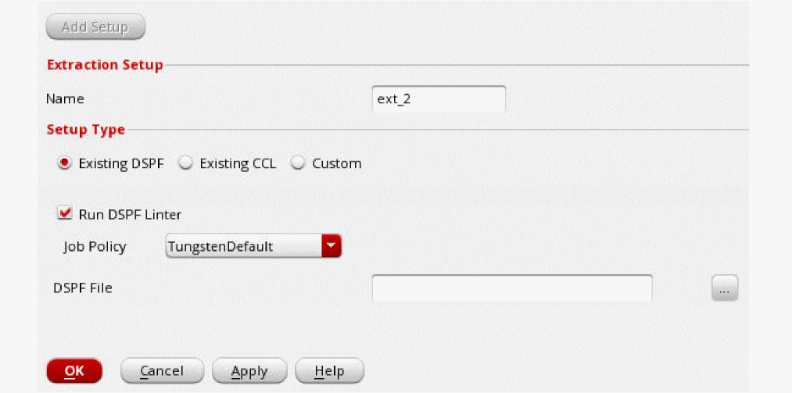

Using an Existing DSPF File
- Choose Setup – Extraction from the task pane.
- Click Add Setup.
- In the Name field, specify a name for the extraction setup.
-
In the Setup Type section, select Existing DSPF, and specify the DSPF file that you want to use for EM-IR analysis.

- Select Run DSPF Linter if you want to run the spfchecker utility on DSPF.
- Select a job policy from the Job Policy Name drop-down list.
-
Click OK.
The extraction details will be displayed in the Extraction tab. You can click Add Setup again to add additional extraction setups.
Related Topics
- Environment Variables
- Using an Existing CCL File
- Specifying New Extraction Settings
- Running DSPF Linter on a DSPF Netlist File
Return to top